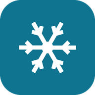

TWAGelang alarm dingin
Browser ini belum bisa memakai Bluetooth
Buka aplikasi lewat Google Chrome di HP Android. Di iPhone pakai browser Bluefy.
Baterai gelang hampir habis
Isi daya lewat lubang USB-C charger supaya alarm besok tetap berbunyi.
Gelang belum tersambung
Pastikan saklar gelang ON dan Bluetooth HP menyala.
TWA
Jam gelang --:--
Uji alarm
Siaga
Kipas --
Pengaturan Alarm
Jam alarm
:
Pola alarm
Satu kali alarm sekitar 1 menit.
Mode kipas pendingin
Otomatis berarti kipas menyala selama alarm berjalan dan 1 menit sesudahnya.
Data
Grafik suhu
Terendah--
Rata rata--
Tertinggi--
Belum ada data.